2024 Higher Human Biology - Paper 2 marking instructions
Source: Scottish Qualifications Authority (SQA) / Qualifications Scotland. This is a StemInteract HTML companion, not an official HTML edition. Extracted text is supplied alongside unaltered page images; use the images or original PDF for table layout, diagrams and symbols.
Jump to a question
PDF page 1
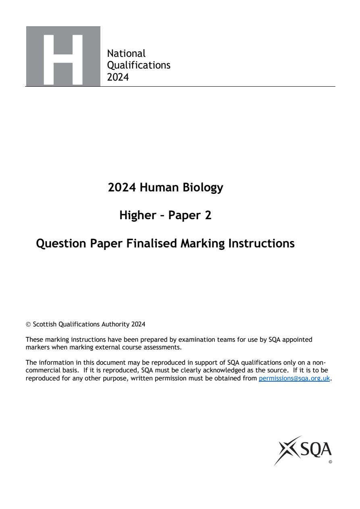
Selectable page text
National
Qualifications
2024
2024 Human Biology
Higher – Paper 2
Question Paper Finalised Marking Instructions
© Scottish Qualifications Authority 2024
These marking instructions have been prepared by examination teams for use by SQA appointed
markers when marking external course assessments.
The information in this document may be reproduced in support of SQA qualifications only on a non-
commercial basis. If it is reproduced, SQA must be clearly acknowledged as the source. If it is to be
reproduced for any other purpose, written permission must be obtained from permissions@sqa.org.uk.PDF page 2
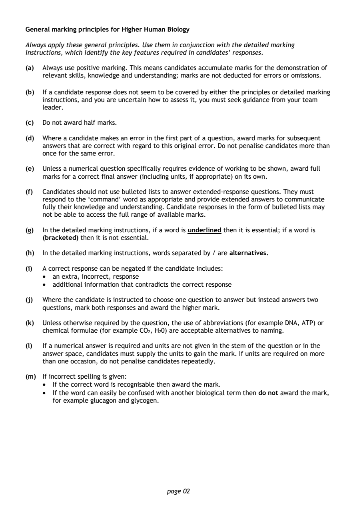
Selectable page text
General marking principles for Higher Human Biology
Always apply these general principles. Use them in conjunction with the detailed marking
instructions, which identify the key features required in candidates’ responses.
(a) Always use positive marking. This means candidates accumulate marks for the demonstration of
relevant skills, knowledge and understanding; marks are not deducted for errors or omissions.
(b) If a candidate response does not seem to be covered by either the principles or detailed marking
instructions, and you are uncertain how to assess it, you must seek guidance from your team
leader.
(c) Do not award half marks.
(d) Where a candidate makes an error in the first part of a question, award marks for subsequent
answers that are correct with regard to this original error. Do not penalise candidates more than
once for the same error.
(e) Unless a numerical question specifically requires evidence of working to be shown, award full
marks for a correct final answer (including units, if appropriate) on its own.
(f) Candidates should not use bulleted lists to answer extended-response questions. They must
respond to the ‘command’ word as appropriate and provide extended answers to communicate
fully their knowledge and understanding. Candidate responses in the form of bulleted lists may
not be able to access the full range of available marks.
(g) In the detailed marking instructions, if a word is underlined then it is essential; if a word is
(bracketed) then it is not essential.
(h) In the detailed marking instructions, words separated by / are alternatives.
(i) A correct response can be negated if the candidate includes:
• an extra, incorrect, response
• additional information that contradicts the correct response
(j) Where the candidate is instructed to choose one question to answer but instead answers two
questions, mark both responses and award the higher mark.
(k) Unless otherwise required by the question, the use of abbreviations (for example DNA, ATP) or
chemical formulae (for example CO , H 0) are acceptable alternatives to naming.
2 2
(l) If a numerical answer is required and units are not given in the stem of the question or in the
answer space, candidates must supply the units to gain the mark. If units are required on more
than one occasion, do not penalise candidates repeatedly.
(m) If incorrect spelling is given:
• If the correct word is recognisable then award the mark.
• If the word can easily be confused with another biological term then do not award the mark,
for example glucagon and glycogen.
page 02PDF page 3
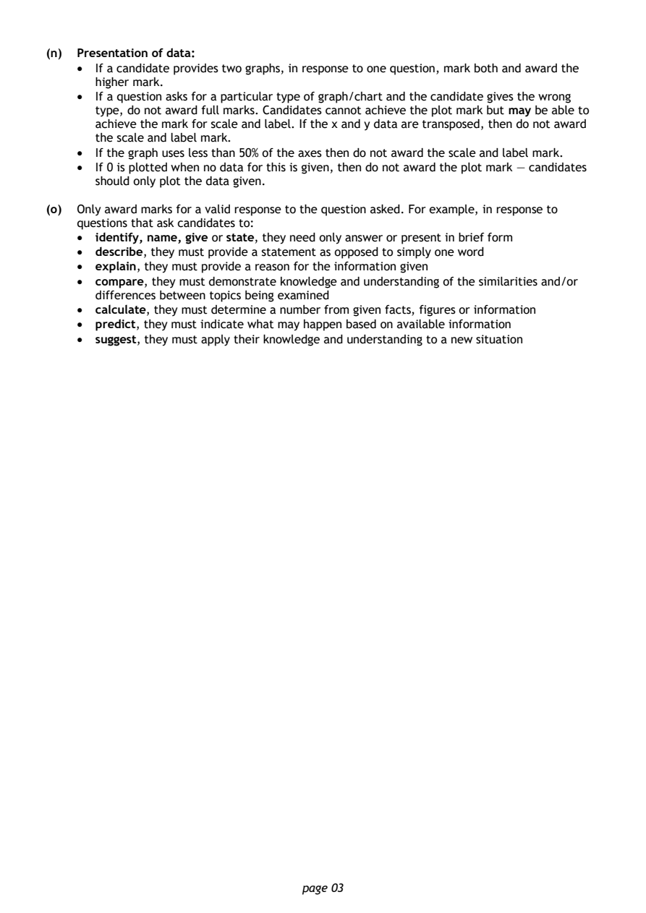
Selectable page text
(n) Presentation of data:
• If a candidate provides two graphs, in response to one question, mark both and award the
higher mark.
• If a question asks for a particular type of graph/chart and the candidate gives the wrong
type, do not award full marks. Candidates cannot achieve the plot mark but may be able to
achieve the mark for scale and label. If the x and y data are transposed, then do not award
the scale and label mark.
• If the graph uses less than 50% of the axes then do not award the scale and label mark.
• If 0 is plotted when no data for this is given, then do not award the plot mark — candidates
should only plot the data given.
(o) Only award marks for a valid response to the question asked. For example, in response to
questions that ask candidates to:
• identify, name, give or state, they need only answer or present in brief form
• describe, they must provide a statement as opposed to simply one word
• explain, they must provide a reason for the information given
• compare, they must demonstrate knowledge and understanding of the similarities and/or
differences between topics being examined
• calculate, they must determine a number from given facts, figures or information
• predict, they must indicate what may happen based on available information
• suggest, they must apply their knowledge and understanding to a new situation
page 03PDF page 4
Question 1Question 2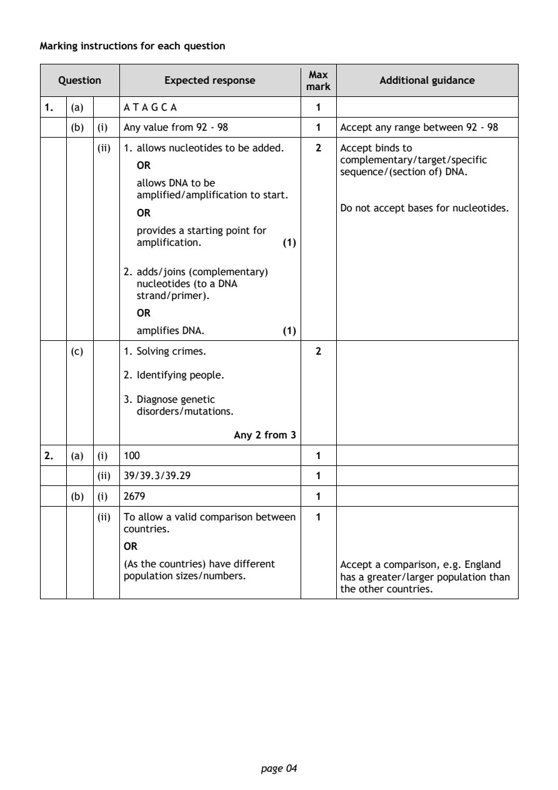
Selectable page text
Marking instructions for each question
Max
Question Expected response Additional guidance
mark
1. (a) A T A G C A 1
(b) (i) Any value from 92 - 98 1 Accept any range between 92 - 98
(ii) 1. allows nucleotides to be added. 2 Accept binds to
complementary/target/specific
OR
sequence/(section of) DNA.
allows DNA to be
amplified/amplification to start.
Do not accept bases for nucleotides.
OR
provides a starting point for
amplification. (1)
2. adds/joins (complementary)
nucleotides (to a DNA
strand/primer).
OR
amplifies DNA. (1)
(c) 1. Solving crimes. 2
2. Identifying people.
3. Diagnose genetic
disorders/mutations.
Any 2 from 3
2. (a) (i) 100 1
(ii) 39/39.3/39.29 1
(b) (i) 2679 1
(ii) To allow a valid comparison between 1
countries.
OR
(As the countries) have different Accept a comparison, e.g. England
population sizes/numbers. has a greater/larger population than
the other countries.
page 04PDF page 5
Question 3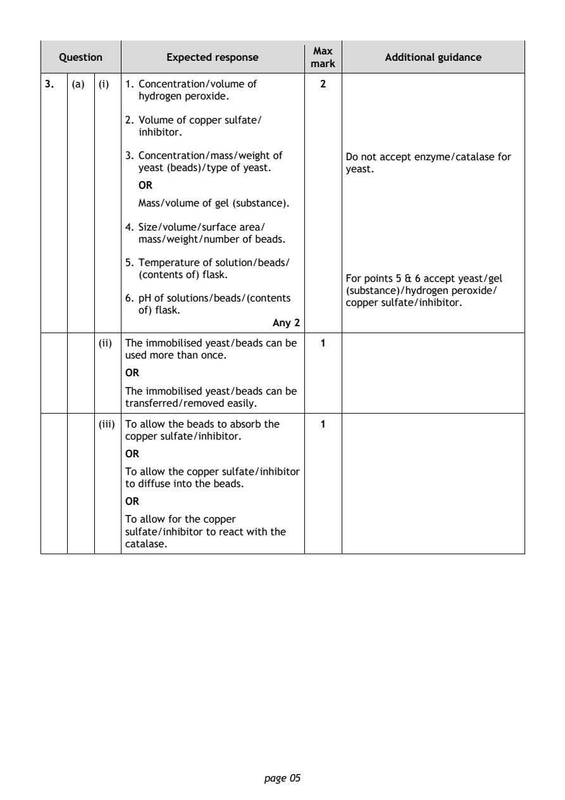
Selectable page text
Max
Question Expected response Additional guidance
mark
3. (a) (i) 1. Concentration/volume of 2
hydrogen peroxide.
2. Volume of copper sulfate/
inhibitor.
3. Concentration/mass/weight of Do not accept enzyme/catalase for
yeast (beads)/type of yeast. yeast.
OR
Mass/volume of gel (substance).
4. Size/volume/surface area/
mass/weight/number of beads.
5. Temperature of solution/beads/
(contents of) flask.
For points 5 & 6 accept yeast/gel
(substance)/hydrogen peroxide/
6. pH of solutions/beads/(contents
copper sulfate/inhibitor.
of) flask.
Any 2
(ii) The immobilised yeast/beads can be 1
used more than once.
OR
The immobilised yeast/beads can be
transferred/removed easily.
(iii) To allow the beads to absorb the 1
copper sulfate/inhibitor.
OR
To allow the copper sulfate/inhibitor
to diffuse into the beads.
OR
To allow for the copper
sulfate/inhibitor to react with the
catalase.
page 05PDF page 6
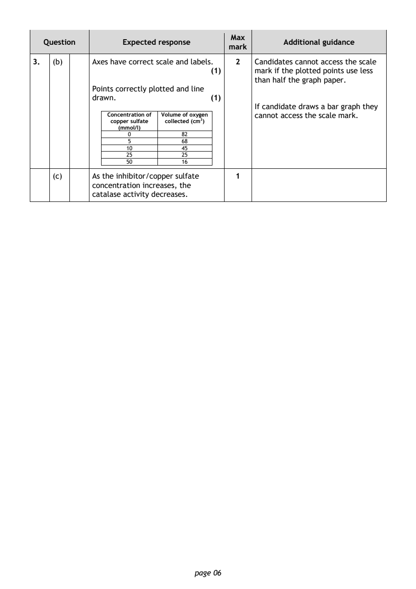
Selectable page text
Max
Question Expected response Additional guidance
mark
3. (b) Axes have correct scale and labels. 2 Candidates cannot access the scale
(1) mark if the plotted points use less
than half the graph paper.
Points correctly plotted and line
drawn. (1)
If candidate draws a bar graph they
Concentration of Volume of oxygen cannot access the scale mark.
copper sulfate collected (cm3)
(mmol/l)
0 82
5 68
10 45
25 25
50 16
(c) As the inhibitor/copper sulfate 1
concentration increases, the
catalase activity decreases.
page 06PDF page 7
Question 4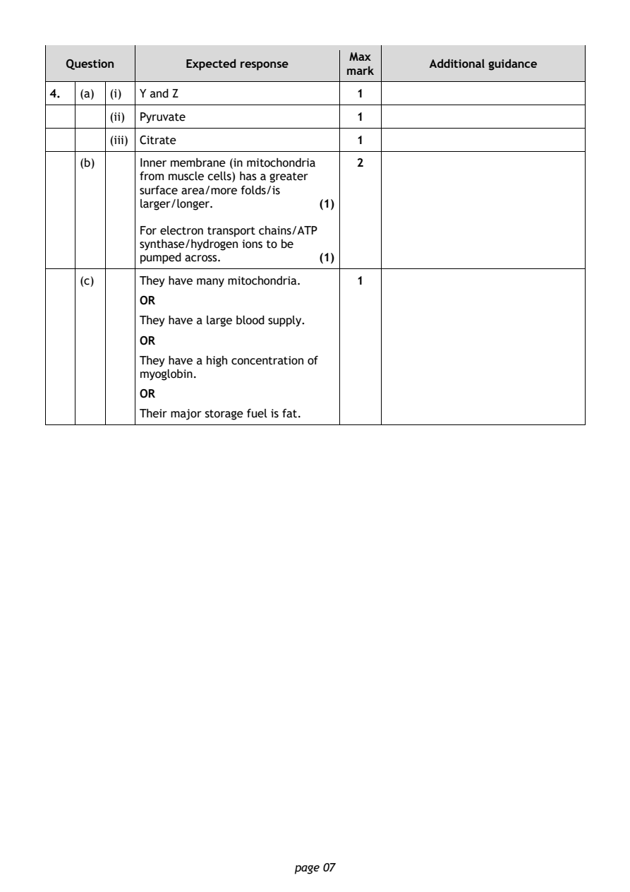
Selectable page text
Max
Question Expected response Additional guidance
mark
4. (a) (i) Y and Z 1
(ii) Pyruvate 1
(iii) Citrate 1
(b) Inner membrane (in mitochondria 2
from muscle cells) has a greater
surface area/more folds/is
larger/longer. (1)
For electron transport chains/ATP
synthase/hydrogen ions to be
pumped across. (1)
(c) They have many mitochondria. 1
OR
They have a large blood supply.
OR
They have a high concentration of
myoglobin.
OR
Their major storage fuel is fat.
page 07PDF page 8
Question 5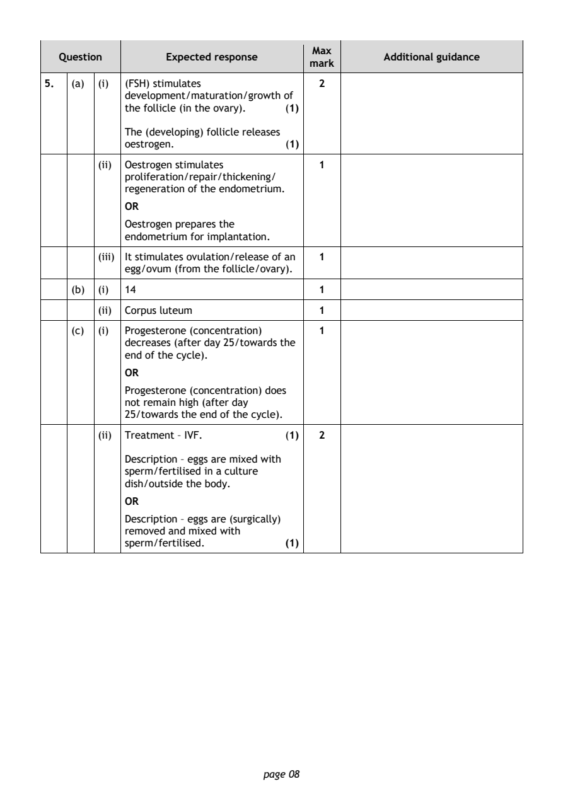
Selectable page text
Max
Question Expected response Additional guidance
mark
5. (a) (i) (FSH) stimulates 2
development/maturation/growth of
the follicle (in the ovary). (1)
The (developing) follicle releases
oestrogen. (1)
(ii) Oestrogen stimulates 1
proliferation/repair/thickening/
regeneration of the endometrium.
OR
Oestrogen prepares the
endometrium for implantation.
(iii) It stimulates ovulation/release of an 1
egg/ovum (from the follicle/ovary).
(b) (i) 14 1
(ii) Corpus luteum 1
(c) (i) Progesterone (concentration) 1
decreases (after day 25/towards the
end of the cycle).
OR
Progesterone (concentration) does
not remain high (after day
25/towards the end of the cycle).
(ii) Treatment – IVF. (1) 2
Description – eggs are mixed with
sperm/fertilised in a culture
dish/outside the body.
OR
Description – eggs are (surgically)
removed and mixed with
sperm/fertilised. (1)
page 08PDF page 9
Question 6Question 7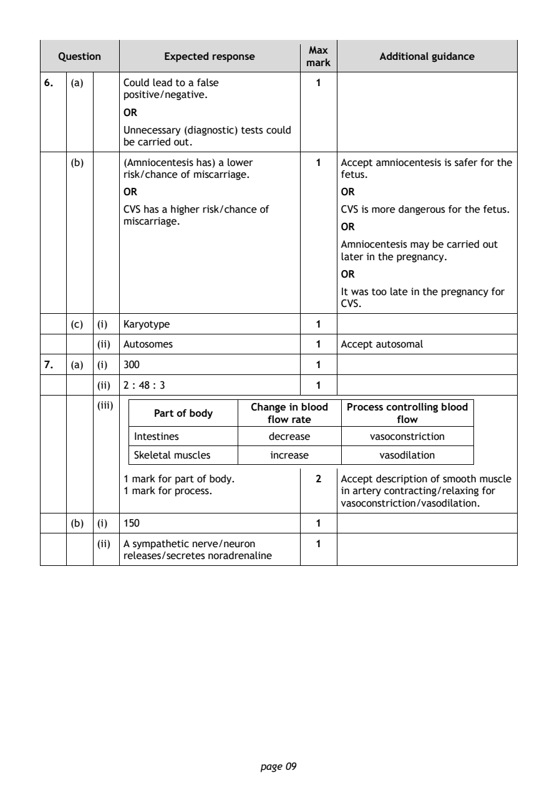
Selectable page text
Max
Question Expected response Additional guidance
mark
6. (a) Could lead to a false 1
positive/negative.
OR
Unnecessary (diagnostic) tests could
be carried out.
(b) (Amniocentesis has) a lower 1 Accept amniocentesis is safer for the
risk/chance of miscarriage. fetus.
OR OR
CVS has a higher risk/chance of CVS is more dangerous for the fetus.
miscarriage.
OR
Amniocentesis may be carried out
later in the pregnancy.
OR
It was too late in the pregnancy for
CVS.
(c) (i) Karyotype 1
(ii) Autosomes 1 Accept autosomal
7. (a) (i) 300 1
(ii) 2 : 48 : 3 1
(iii) Change in blood Process controlling blood
Part of body
flow rate flow
Intestines decrease vasoconstriction
Skeletal muscles increase vasodilation
1 mark for part of body. 2 Accept description of smooth muscle
1 mark for process. in artery contracting/relaxing for
vasoconstriction/vasodilation.
(b) (i) 150 1
(ii) A sympathetic nerve/neuron 1
releases/secretes noradrenaline
page 09PDF page 10
Question 8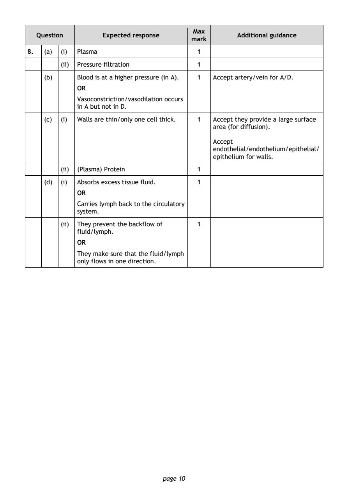
Selectable page text
Max
Question Expected response Additional guidance
mark
8. (a) (i) Plasma 1
(ii) Pressure filtration 1
(b) Blood is at a higher pressure (in A). 1 Accept artery/vein for A/D.
OR
Vasoconstriction/vasodilation occurs
in A but not in D.
(c) (i) Walls are thin/only one cell thick. 1 Accept they provide a large surface
area (for diffusion).
Accept
endothelial/endothelium/epithelial/
epithelium for walls.
(ii) (Plasma) Protein 1
(d) (i) Absorbs excess tissue fluid. 1
OR
Carries lymph back to the circulatory
system.
(ii) They prevent the backflow of 1
fluid/lymph.
OR
They make sure that the fluid/lymph
only flows in one direction.
page 10PDF page 11
Question 9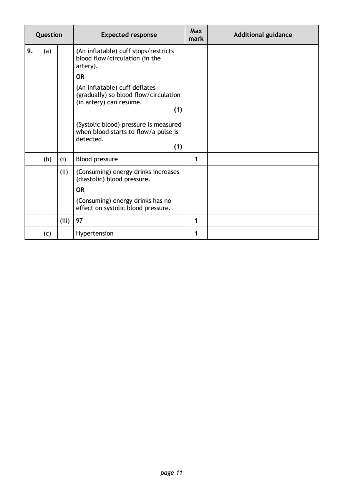
Selectable page text
Max
Question Expected response Additional guidance
mark
9. (a) (An inflatable) cuff stops/restricts
blood flow/circulation (in the
artery).
OR
(An inflatable) cuff deflates
(gradually) so blood flow/circulation
(in artery) can resume.
(1)
(Systolic blood) pressure is measured
when blood starts to flow/a pulse is
detected.
(1)
(b) (i) Blood pressure 1
(ii) (Consuming) energy drinks increases
(diastolic) blood pressure.
OR
(Consuming) energy drinks has no
effect on systolic blood pressure.
(iii) 97 1
(c) Hypertension 1
page 11PDF page 12
Question 10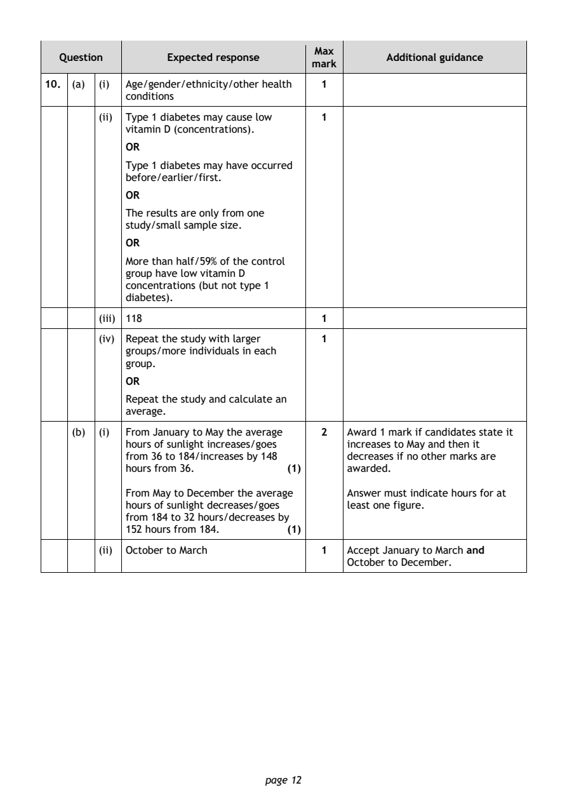
Selectable page text
Max
Question Expected response Additional guidance
mark
10. (a) (i) Age/gender/ethnicity/other health 1
conditions
(ii) Type 1 diabetes may cause low 1
vitamin D (concentrations).
OR
Type 1 diabetes may have occurred
before/earlier/first.
OR
The results are only from one
study/small sample size.
OR
More than half/59% of the control
group have low vitamin D
concentrations (but not type 1
diabetes).
(iii) 118 1
(iv) Repeat the study with larger 1
groups/more individuals in each
group.
OR
Repeat the study and calculate an
average.
(b) (i) From January to May the average 2 Award 1 mark if candidates state it
hours of sunlight increases/goes increases to May and then it
from 36 to 184/increases by 148 decreases if no other marks are
hours from 36. (1) awarded.
From May to December the average Answer must indicate hours for at
hours of sunlight decreases/goes least one figure.
from 184 to 32 hours/decreases by
152 hours from 184. (1)
(ii) October to March 1 Accept January to March and
October to December.
page 12PDF page 13
Question 11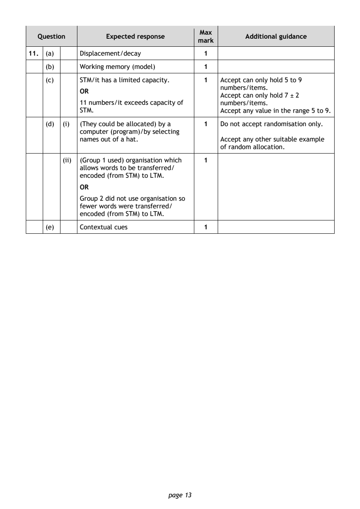
Selectable page text
Max
Question Expected response Additional guidance
mark
11. (a) Displacement/decay 1
(b) Working memory (model) 1
(c) STM/it has a limited capacity. 1 Accept can only hold 5 to 9
numbers/items.
OR
Accept can only hold 7 ± 2
11 numbers/it exceeds capacity of numbers/items.
STM. Accept any value in the range 5 to 9.
(d) (i) (They could be allocated) by a 1 Do not accept randomisation only.
computer (program)/by selecting
names out of a hat. Accept any other suitable example
of random allocation.
(ii) (Group 1 used) organisation which 1
allows words to be transferred/
encoded (from STM) to LTM.
OR
Group 2 did not use organisation so
fewer words were transferred/
encoded (from STM) to LTM.
(e) Contextual cues 1
page 13PDF page 14
Question 12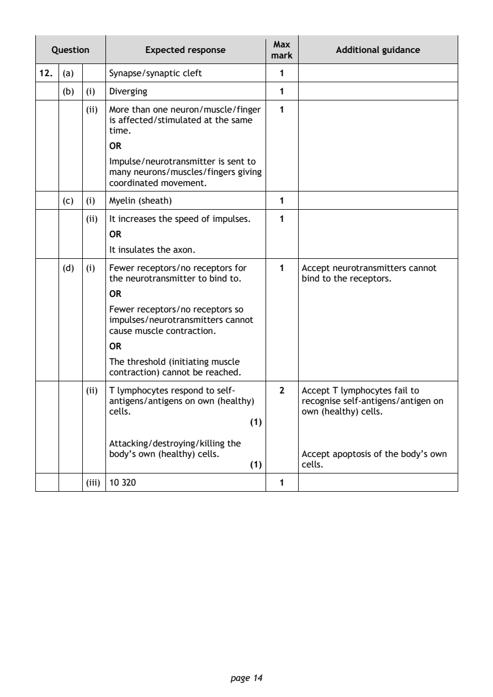
Selectable page text
Max
Question Expected response Additional guidance
mark
12. (a) Synapse/synaptic cleft 1
(b) (i) Diverging 1
(ii) More than one neuron/muscle/finger 1
is affected/stimulated at the same
time.
OR
Impulse/neurotransmitter is sent to
many neurons/muscles/fingers giving
coordinated movement.
(c) (i) Myelin (sheath) 1
(ii) It increases the speed of impulses. 1
OR
It insulates the axon.
(d) (i) Fewer receptors/no receptors for 1 Accept neurotransmitters cannot
the neurotransmitter to bind to. bind to the receptors.
OR
Fewer receptors/no receptors so
impulses/neurotransmitters cannot
cause muscle contraction.
OR
The threshold (initiating muscle
contraction) cannot be reached.
(ii) T lymphocytes respond to self- 2 Accept T lymphocytes fail to
antigens/antigens on own (healthy) recognise self-antigens/antigen on
cells. own (healthy) cells.
(1)
Attacking/destroying/killing the
body’s own (healthy) cells. Accept apoptosis of the body’s own
(1) cells.
(iii) 10 320 1
page 14PDF page 15
Question 13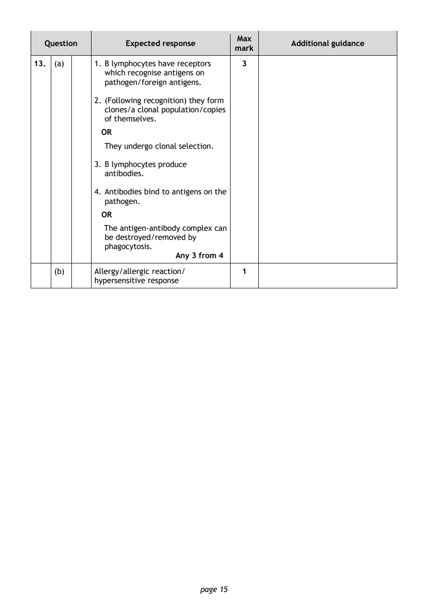
Selectable page text
Max
Question Expected response Additional guidance
mark
13. (a) 1. B lymphocytes have receptors 3
which recognise antigens on
pathogen/foreign antigens.
2. (Following recognition) they form
clones/a clonal population/copies
of themselves.
OR
They undergo clonal selection.
3. B lymphocytes produce
antibodies.
4. Antibodies bind to antigens on the
pathogen.
OR
The antigen-antibody complex can
be destroyed/removed by
phagocytosis.
Any 3 from 4
(b) Allergy/allergic reaction/ 1
hypersensitive response
page 15PDF page 16
Question 14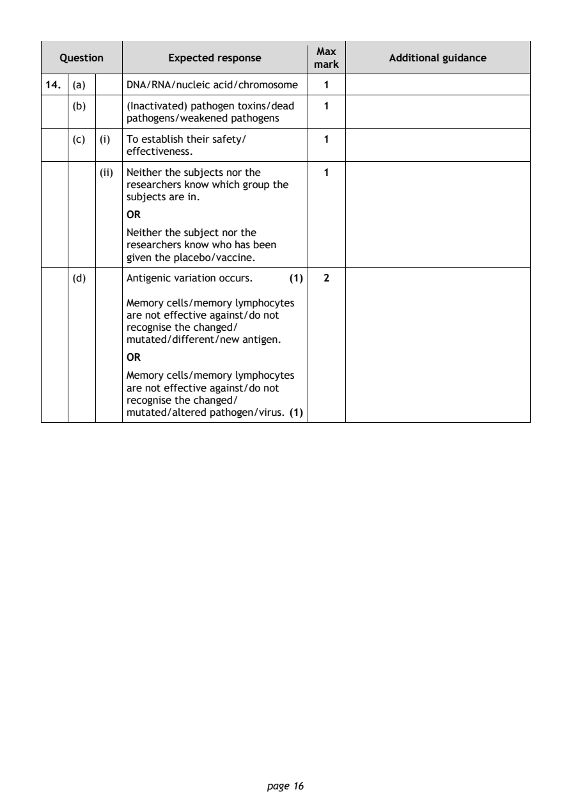
Selectable page text
Max
Question Expected response Additional guidance
mark
14. (a) DNA/RNA/nucleic acid/chromosome 1
(b) (Inactivated) pathogen toxins/dead 1
pathogens/weakened pathogens
(c) (i) To establish their safety/ 1
effectiveness.
(ii) Neither the subjects nor the 1
researchers know which group the
subjects are in.
OR
Neither the subject nor the
researchers know who has been
given the placebo/vaccine.
(d) Antigenic variation occurs. (1) 2
Memory cells/memory lymphocytes
are not effective against/do not
recognise the changed/
mutated/different/new antigen.
OR
Memory cells/memory lymphocytes
are not effective against/do not
recognise the changed/
mutated/altered pathogen/virus. (1)
page 16PDF page 17
Question 15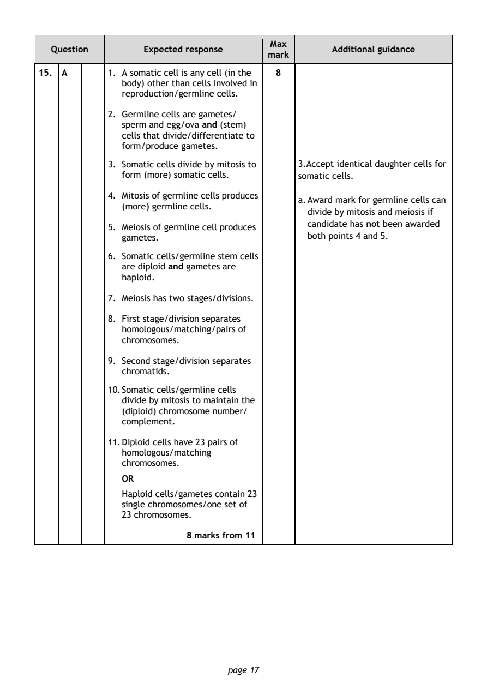
Selectable page text
Max
Question Expected response Additional guidance
mark
15. A 1. A somatic cell is any cell (in the 8
body) other than cells involved in
reproduction/germline cells.
2. Germline cells are gametes/
sperm and egg/ova and (stem)
cells that divide/differentiate to
form/produce gametes.
3. Somatic cells divide by mitosis to 3.Accept identical daughter cells for
form (more) somatic cells. somatic cells.
4. Mitosis of germline cells produces
a. Award mark for germline cells can
(more) germline cells.
divide by mitosis and meiosis if
candidate has not been awarded
5. Meiosis of germline cell produces
gametes. both points 4 and 5.
6. Somatic cells/germline stem cells
are diploid and gametes are
haploid.
7. Meiosis has two stages/divisions.
8. First stage/division separates
homologous/matching/pairs of
chromosomes.
9. Second stage/division separates
chromatids.
10. Somatic cells/germline cells
divide by mitosis to maintain the
(diploid) chromosome number/
complement.
11. Diploid cells have 23 pairs of
homologous/matching
chromosomes.
OR
Haploid cells/gametes contain 23
single chromosomes/one set of
23 chromosomes.
8 marks from 11
page 17PDF page 18
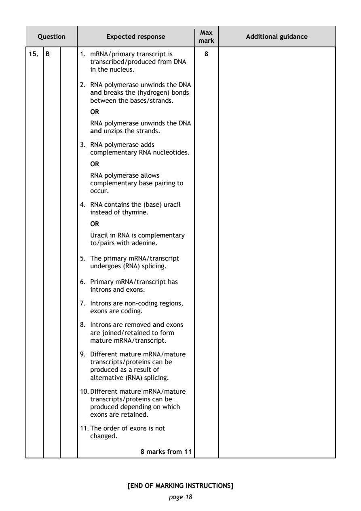
Selectable page text
Max
Question Expected response Additional guidance
mark
15. B 1. mRNA/primary transcript is 8
transcribed/produced from DNA
in the nucleus.
2. RNA polymerase unwinds the DNA
and breaks the (hydrogen) bonds
between the bases/strands.
OR
RNA polymerase unwinds the DNA
and unzips the strands.
3. RNA polymerase adds
complementary RNA nucleotides.
OR
RNA polymerase allows
complementary base pairing to
occur.
4. RNA contains the (base) uracil
instead of thymine.
OR
Uracil in RNA is complementary
to/pairs with adenine.
5. The primary mRNA/transcript
undergoes (RNA) splicing.
6. Primary mRNA/transcript has
introns and exons.
7. Introns are non-coding regions,
exons are coding.
8. Introns are removed and exons
are joined/retained to form
mature mRNA/transcript.
9. Different mature mRNA/mature
transcripts/proteins can be
produced as a result of
alternative (RNA) splicing.
10. Different mature mRNA/mature
transcripts/proteins can be
produced depending on which
exons are retained.
11. The order of exons is not
changed.
8 marks from 11
[END OF MARKING INSTRUCTIONS]
page 18